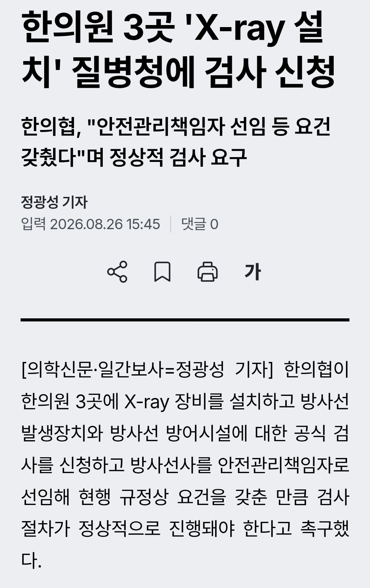
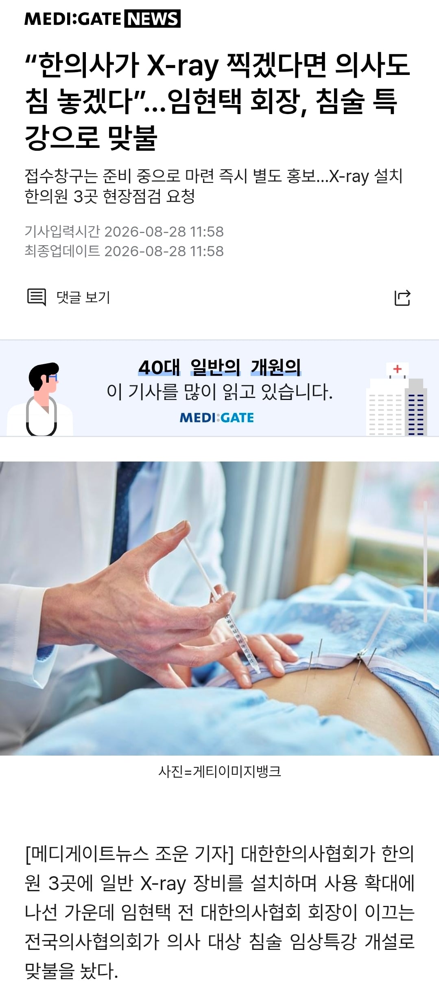

3줄요약 )
1. 한의사가 저선량 방사선 법원 무죄 근거로 우리도 X RAY 찍겠다 선언
2. 의사 저선량 방사선 무죄가 X Ray 가능하다는 건 같은 말이 아니다 말장난 하지말고 한의사는 한의학적인 것만 써라
3. 이번에 한의사들이 XRAY 설치함
의사협회 개빡돔
한의사 "응 X RAY 할거야"
의사 " 응 시발 우리도 침놓을거야 ㅅㄱ"


3줄요약 )
1. 한의사가 저선량 방사선 법원 무죄 근거로 우리도 X RAY 찍겠다 선언
2. 의사 저선량 방사선 무죄가 X Ray 가능하다는 건 같은 말이 아니다 말장난 하지말고 한의사는 한의학적인 것만 써라
3. 이번에 한의사들이 XRAY 설치함
의사협회 개빡돔
한의사 "응 X RAY 할거야"
의사 " 응 시발 우리도 침놓을거야 ㅅㄱ"
X-ray로 진단하고 거따가 침 꽂나 그럼? 신기하네
골절환자 판단하기 좋잖아
근데 엑스레이 찍어서 골절이 확인될정도면 아 뻐근하네 한의원 가야겠다 수준의 고통이 아니잖아
골절 위치와 정도를 파악할 수 있지.
글고 미세골절의 경우는 찍어서 확인되는 경우도 많아
미세골절은 통증이 그렇게 심하지않아서 모를수있음
한약은 모르겠고 침술은 한무당이라고 하기엔 효과가 좋음 애초에 한의학이 개발한것도아니고 중의학에서 시작한걸로 암
그야 한의학이 중의학에서 시작했으니까....
실제로 IMS는 효과 좋음
침 놓는건 공부해야해서 좀 걸릴거고
엑스레이는 골절이나 금갔는데 침맞으러 온 사람들 종종 있어서 나쁘지 않은것 같기도 하고
나도 골절아닌이상 한무당가서 침맞는데
뭔효과인지 좋음
침은 논문으로 통증완화랑 회복개선입증됐음
오 논문 이름이 뭐야
침 효과자체가 자가치유력 올리는거라 효과가 없진 않음.
자가치유효과가 안날정도인 곳에 푹 찔려서 으아악 아퍼어어어!!!해서 힐러 총출동->치료 가속 원리라서...
체외충격파?
침이 효과없다면
수많은 마사지종류랑 재활쪽 스트레칭 뭐 그런것들도 의미없어야 하는게 맞음
진짜 둘다 개병신같다 내가생각해도ㄷㄷ
한의원에서 엑스레이 찍어준다하면 오? 할거같은데 병원갔는데 침놔준다하면 엥? 할듯 ㅋㅋㅋ
방사선사 : ?
근데 의사가 놓는 침 안전 할 것 같기도..
라는 느낌으로 의사한테 수액 놔달라고 하는 사람이 있지요
...?
더 싸워라 ㅋㅋㅋ
한방사들 나대노
의사가 침놓는건 그냥 내가 집에서 바늘로 쑤시는거랑 똑같잖아
드디어 모든 판을 다 준비했다. 침을 양학으로 흡수한다!
뭉친 근육이 침맞고 뚜두둑 거리면서 풀어지는걸 체험했지
의사가 침 놔주는건 불안한데...
외과나 통증의학과에서 침도 맞을수 있는거야? ㅋㅋㅋ
??: 나도 노래한다
나도 이거 생각함ㅋㅋㅋㄱㅋ
개초딩 싸움도 아니고ㅋㅋㅋㅋㅋ
의사 : 나도 국수 호호~ 서비스 해준다
놔라 새끼들아 ㅋㅋㅋㅋ 누가 놓지말래냐
우리동네 의원에서는 의사가 진짜 침놓아줌..노인들 바글바글한데 물리치료 받고있으면 의사가 와서 침놓아줌ㅎㅎ 자격증이 있는건지는 모르겠지만 진료실에 한의학책이 몇개있음.주사도 2방씩 놔줘서 빨리 나아야 할때 가끔 감ㅎㅎ
한의사, 의사 면허증 둘 가 가지고 계신 분들 있더라고. 고등학교가 안동 깡촌에 있었는데 거기 의사 할배가 그랬음
한의원에서 엑스레이 찍을게요 : 황당
외과에서 침놔드릴게요 : 당황
이제 물리치료실에서 전기침 다시 놓을수 있게 될려나? 이거 진짜 괜찮았는데
자백 받을 때?
상도동 정형외과도 물리치료 할때 침놔줬는데
대방협은뭐하냐
의사가 침술로 치료한다는 의미보다는 다른 의미로 해석되네. IMS라고 해서 침을 꽂아 진행하는 체외충격파의 일종이 있음. 근데 이게 대법원에서 침술이라고 때려서 한국의 의사들은 진행을 못 함.
내가 볼 땐 이거 뚫리는 계기가 되지 싶다.
나도 노래부른다?
불러 병신아 ㅋㅋㅋ

난 옛날에 한의원에서 엑스레이 찍고 추나 받았는데
ㅋㅋㅋㅋㅋ x ray가 쉬워보이나? 가격이 싸서 많이찍지만 내과 전문의따도 잘모르겠는게 x ray인데.. x ray에서 애매하면 CT도 찍어봐야되고. 무서워서 영상의학과 전문의 외주판독으로 더블체크하기도하는데 .. 환자분들한테 해만 주지마십쇼 제발
ㅋㅋㅋㅋ 놔. 병신아. ㅋㅋㅋㅋㅋㅋㅋ
어라 본과때 봉사활동가면 졸업한 선배들이 양방침 동네어르신들 놔줬었는데
의사는 불법이었나 ㅎㅎ
이참에 하자~ ㅋㅋㅋ
한의 : 엑스레이찍을게요~
환자 : 그래요 뭐, 쩝
양의 : 김간, 침놓게 침갖고와~
환자 : 아뇨, 아뇨! 전문가에게 맞을게요!
한"의사" 이렇게 부르기보단 한"시술사" 이게 더 정확하지 않나
동의보감 하나 봤다고 "의사"는 너무 올려치긴데
존나 많다... 정형외과만해도 아주 그냥 죽여줘... 한방에서 정형외과 일부는 먹을 수 있지 않을까?
그리고 초기 진단에서 엄청 요긴하지..